2.0 Configuración inicial de la red (VirtualBox)
Se creó una red NAT en VirtualBox con direccionamiento 192.168.20.0/24, que posteriormente fue asignada a ambas máquinas virtuales.

Creación de la red NAT.

Asignación de la red NAT a ubuntu1.

Asignación de la red NAT a ubuntu2.
2.1 Configuración de IPs y conectividad
Se configuraron direcciones IP estáticas mediante netplan en ambas máquinas virtuales y se comprobó la conectividad.
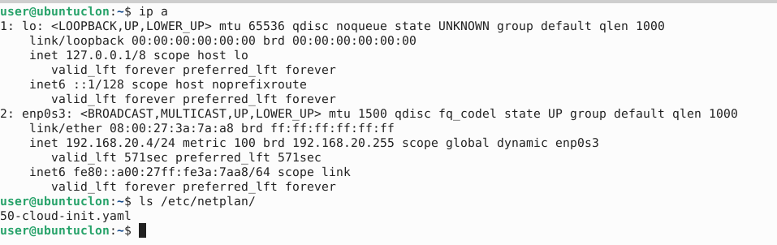Configuración de red en ubuntu1.
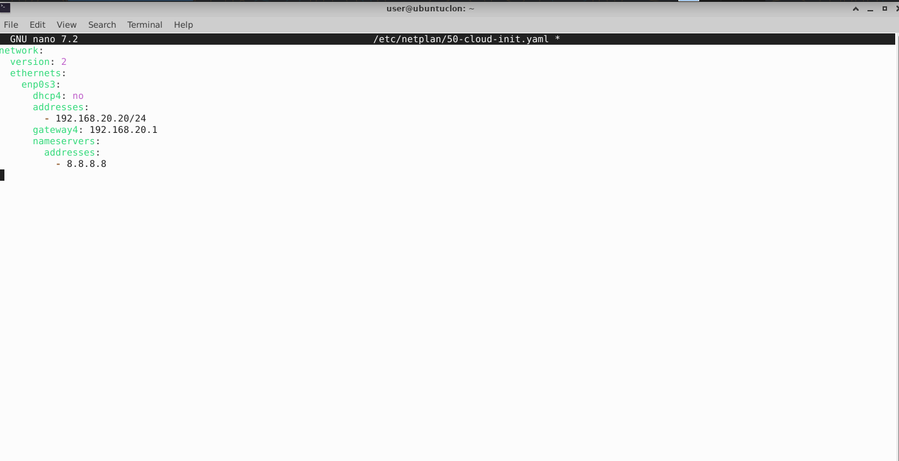Configuración de red en ubuntu2.
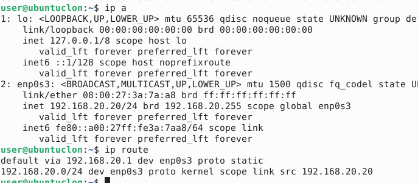Comprobación de IP asignada.
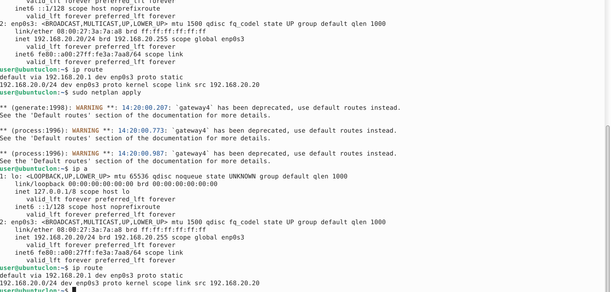Ping entre máquinas.
2.2 Configuración del hostname
Se modificó el hostname utilizando el comando hostnamectl. En la segunda máquina se aplicó el mismo procedimiento.
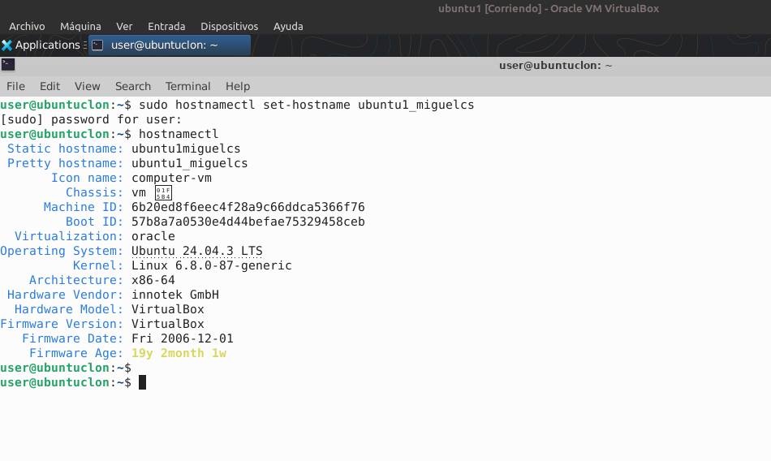Hostname configurado como ubuntu1_miguelcs.
2.3 Pruebas ICMP
Se realizaron pruebas ICMP hacia la otra máquina, el gateway y un destino externo.
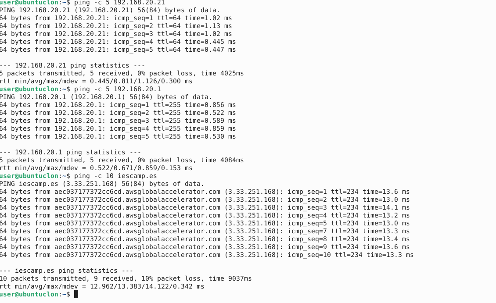Pruebas ICMP correctas.
2.4 Tabla ARP
Se consultó la tabla ARP para verificar la resolución IP–MAC.
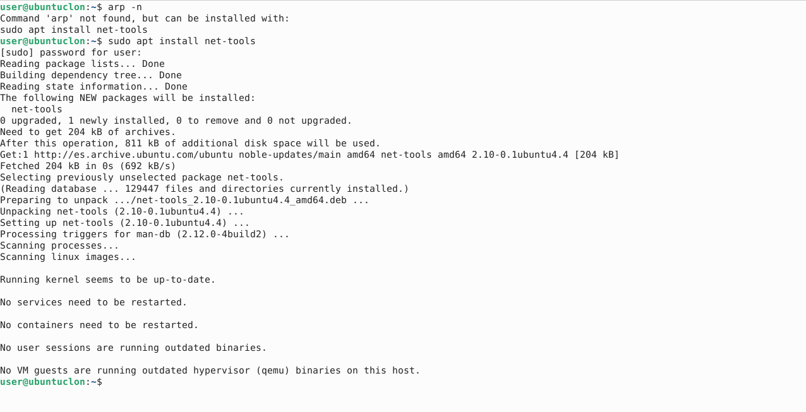Tabla ARP mostrada mediante arp -n.
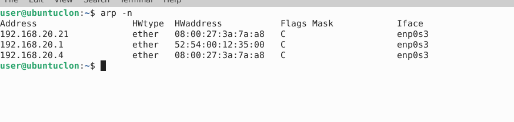Detalle de entradas ARP.
2.5 Cambio de dirección MAC
Se modificó la dirección MAC de la segunda máquina y se comprobó la actualización de la tabla ARP.
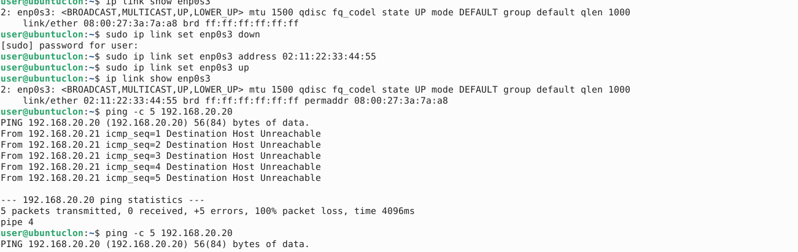Cambio de MAC en ubuntu2.
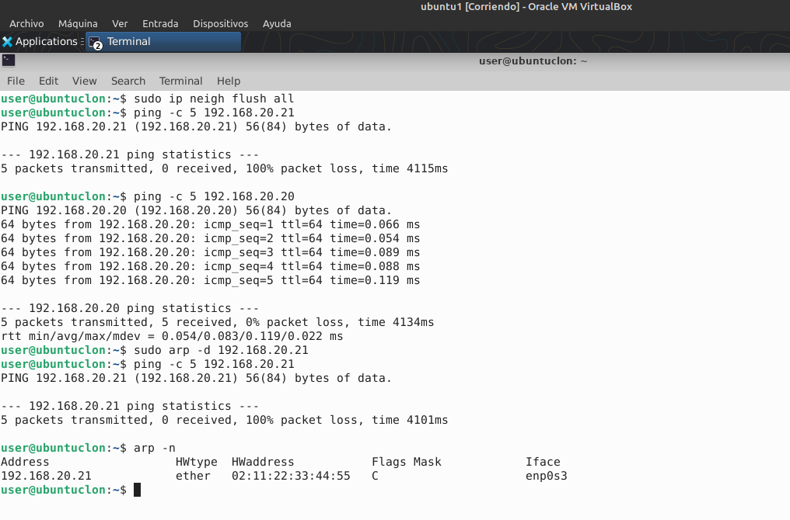Nueva MAC reflejada en la tabla ARP.
2.6 Escaneo de puertos y servicios
Se realizó un escaneo de puertos antes y después de instalar Apache y vsftpd.
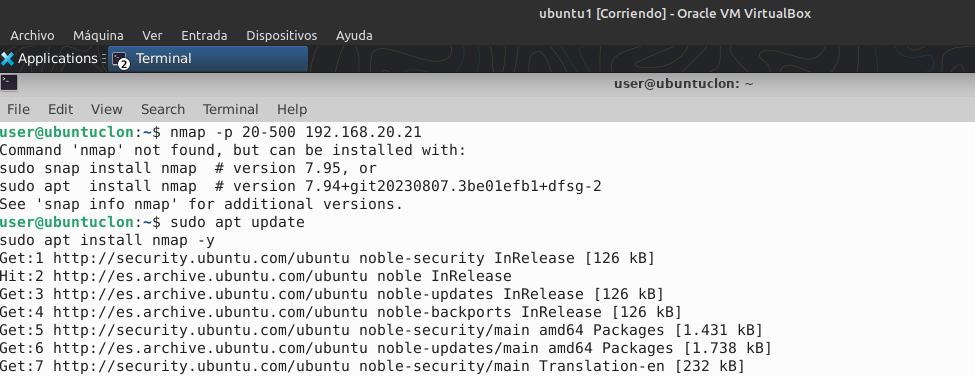Escaneo inicial con nmap.
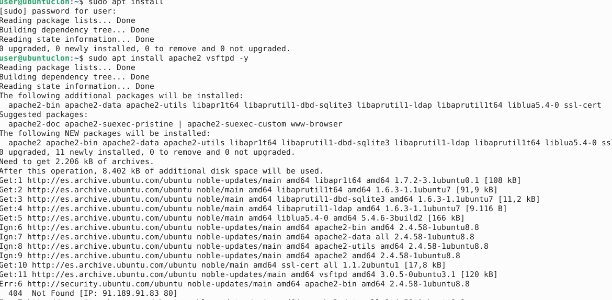Instalación de servicios.
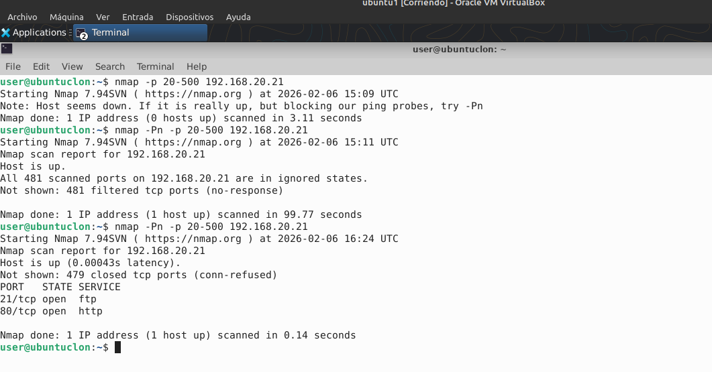Puertos abiertos tras la instalación.
2.7 Consultas DNS
Se realizaron consultas DNS para distintos dominios públicos.
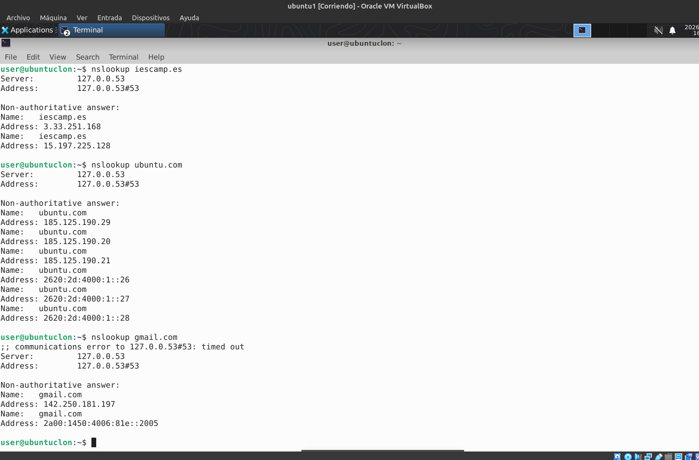Resolución DNS correcta.
2.8 Activación y desactivación de la interfaz
Se comprobó la conectividad continua al desactivar y reactivar la interfaz de red.
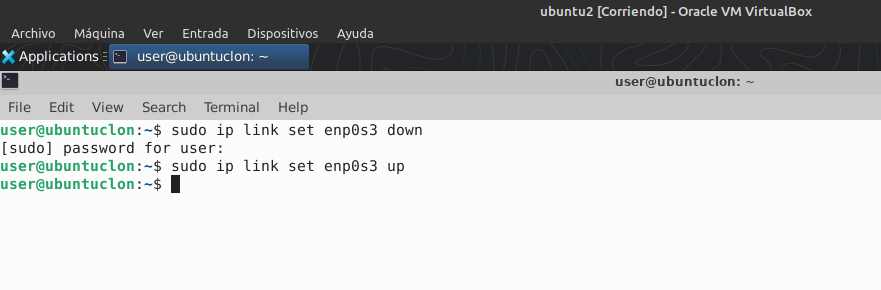Interrupción y recuperación de la conectividad.
2.9 Contabilidad de paquetes con iptables
Se configuraron reglas de iptables para contabilizar paquetes ICMP.
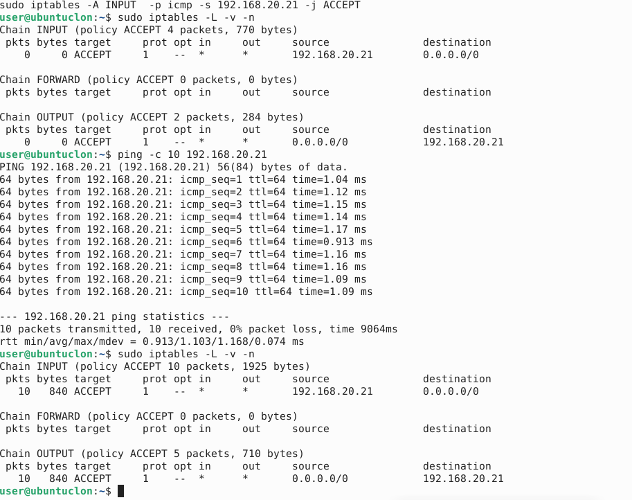Contadores de iptables tras los pings.